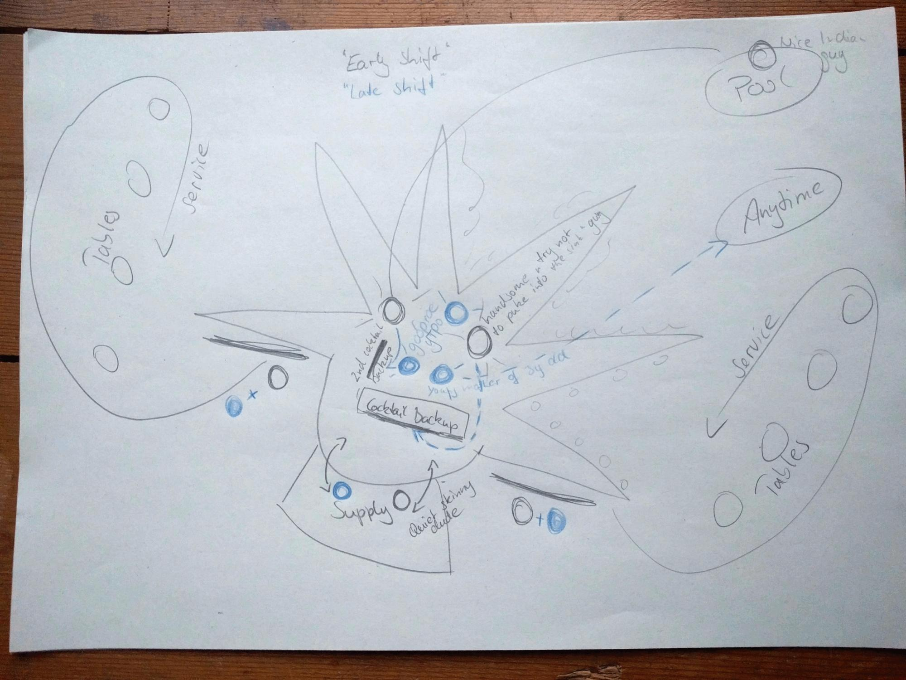
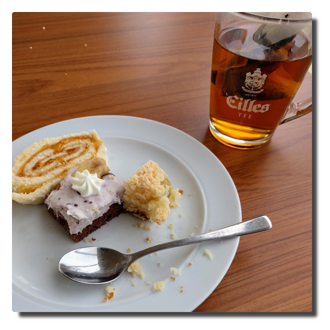

Love Boat - The Real Story. Seetag
Tag 4. Ahoy!
The morning pulls me outside and I go for a pre-breakfast walk on deck. There is already coffee for the early birds at the Anytime Bar. I'm greeting the loafing smokers while passing them. Armoured with book and covered in blankets I occupy a beach sofa on deck 11 after breakfast. It is windy, cloudy, somehow nice but still quite cold.
 |
|---|
| The 'Yellow Blankets' are demonstrating for more relaxing and better weather |
The weather is getting worse and so I'm looking for a quiet place inside in the early afternoon. This proposition turns out to be not as easy but the AIDA bar is slowly becoming a regular residence. I am so inactive that I skip lunch. Also I'm getting a bit petulant. In the afternoon there is finally some edutainment to attend and I book the excursion to the Nordkapp.
A tourist does what a tourist has to do.
More weather
Our ship is accompanied by two low-pressure areas. A high-pressure area over central Europe causes spring-like temperatures in the German homeland but also a huge airmass exchange between these three meteorological phenoma. As a bonus the low-pressure area over Iceland is greeting us with foaming waves over the Atlantic ocean.
Short: We are caught in a storm with some respectable swell. A lot of it.
What's also there a lot of: much space at the dinner restaurants and the bars. One prancels through the familiar, staggering ship. The evening entertainment programme was delayed to the next day and the decks 6 and 11 are completely closed for safety reasons.
Anybody who isn't seasick spends the time playing games and chilling in the bars while dreaming of tomorrow's shore leave Bodø.
Orga
A not so very polite opportunity to spend your time on a staggering ship is to watch the staff work.
After a few days you notice some patterns: they always work (12+ hours) and mostly at the same positions. Going for a walk or run in the morning you recognize the guy open the pool bar. The same guy makes you a coffee three hours later and a beer in the evening. I bet this real nice Indian guy does a shift at the crew night club afterwords. Maybe this guy is a vampire...? Same for the restaurant staff. The guys you are greeting at breakfast, you are greeting at dinner again.
And all of them are so damn kind all of the time. I really hope they are getting paid appropriately, otherwise I could not go on a journey like this again...
|  |
|---|
| Daily staff carousel of the star-shaped AIDA Bar |
Use Markdown extensions in Nikola
Inhalt
The default markup language of input files in Nikola is restructuredText. You can, of course, configure Nikola to also process Markdown formatted files but by default there are missing some features like admonitions or table of contents which can be enabled by extensions.
Basic configuration
First things first: you have to edit the variables COMPILERS, POSTS and PAGES of the conf.py and uncomment or add a line in order to make Nikola recognize and render Markdown files:
COMPILERS = { "rest": ('.rst', '.txt'), "markdown": ('.md', '.mdown', '.markdown'), ... } POSTS = ( ("posts/*.rst", "posts", "post.tmpl"), ... ("posts/*.md", "posts", "post.tmpl"), ) PAGES = ( ("pages/*.rst", "pages", "story.tmpl"), ... ("pages/*.md", "pages", "story.tmpl"), )
Markdown extensions
There are two types of Markdown extensions:
Officially supported extensions that are shipped with the python-markdown package.
Third party extensions which have to be installed separately on your system.
Enable
An extension is enabled by adding it to the MARKDOWN_EXTENSIONS variable.
If you want to enable officially supported extensions you add the extensions' entry point as list item. If the extension is part of the extra folder you can use extra as list item or the name of the extension, p.e. you enable definition lists with either def_list or extra.
The list item for a third party extension is the exact dot notation (see the extension's documentation).
Examples
MARKDOWN_EXTENSIONS = [# all extensions of extra available "extra", # other officially supported extensions "admonition", "toc", # third party extension "markdown_include.include", ]
Configure
Some extensions offer configuration options. These are defined in the MARKDOWN_EXTENSIONS_CONFIGS variable. The dictionary's structure is
MARKDOWN_EXTENSIONS_CONFIGS = { DEFAULT_LANG: { "ext1": {"option1": value1, "option2": value2", }, "ext2": {"option1": value1, "option2": value2", }, ... }, "other_configured_lang": { "ext1": {"option1": value1, "option2": value3", }, ... }, }
Use
Consult the extension's documentation for details. Useful extensions:
Love Boat - The Real Story. Haugesund
Day 3. God morgen, Haugesund!
We are on time landing in Haugesund which is our first and most southern stop. After having breakfaast we prepare for our shore excursion.
 |
|---|
| Haugesund havn |
Soon we are strolling through the small inner city and stopping by at the tourist information because we are experienced individual tourists and know our duties. Haugesund's main attraction is within walking range so we visit the combined monument Haraldshaugen (with the Haraldstøtten obelisk) und Krosshaugen (that with the stone cross) in memory to the rule of king Harald Hårfagre (Harald Fairhair) and the country's christianity.
 |
|---|
| Harald Hårfagre |
My travel mates decide to take a rest after the walk and I decide to fight at the pie buffet again. I am triumphant and celebrate my victory with cake and tea.
|  |
|---|
| No human or other creature was harmed filling this plate. |
We depart in the early evening and face another complete day at the ocean. Later on the winds intensify, at Beaufort force 7 both of our male travel party members call in seasick.
The noise of the sea
Travelling by ship is done on purpose. Being on the way moving is part of the destination. It is proven that maritime surroundings do have positive health effects on humans. One can even buy recordings of maritime and water noises or just listen to these on YouTube.
That is interesting because for humans the ocean is a hostile ecosystem full of dangers and therefore a natural frontier. To us the sound of the rushing sea is fascinating and we are able to watch the movements of the water and the waves for eternity. Instead of calming us down it should make us freak out because without the safety area of the steely colossus we would be dead within minutes.
Friendship
Last summer during a sailing trip on the river Havel I got into a heavy and fast moving thunderstorm with winds between 7 to 9 bft causing huge damages on land. We were able to take our position in a bay to let the storm pass over us maneuvring with as little sail as possible. That worked pretty well, still that was a tough and shaky situation involving massive amounts of water from various directions.
Reminded of this event I watch the waves and try to think through the thought experiment we sometimes talk about at sunny days: if we piloted the boat in direction New York, how far would we get in that nutshell (Friendship 24 sailing boat)? When well prepared and equipped and a bit lucky regarding the weather one can get mildly optimistic but if you are knocked out or thrown overboard at 10 bft and 12 meter high waves your remains will not ever be found.
That brings me to another question:
When do people realize somebody is missing?
I did not count how often I was advised not to pull a Küblböck in advance of the journey. In case you do not know (which is probably the case): Daniel Küblböck was a casting show/reality TV personality who had become a last sad media footnote by jumping off a cruiseship into the ocean in some previous year.
In this video by a travel journalist it is stated that up to 19 persons vanish from cruiseships every year.
Jumping off a sailing ship into the ocean is a very, very safe method of committing suicide. Even if there are witnesses it is almost impossible to keep track of the lost person in the water if the person is conscious and gets back to the water surface at all until rescue measures are initiated. Any person who ever has performed a "man/buoy over board" maneuvre will comprehend this.
If one goes overboard without witnesses, it will not be noticed at first.
 |
|---|
| The Red Telephone |
Crew
Missing crew is probably noticed quite rapidly. From my observation the staff maintaining the outer decks seem to always work in teams of two or more. Taking this premise into account a missing crew member should be recognized within working shift but considering these guys do not do a 9 to 5 job here this may also be half a day. By the beginning of the next day's working shift it will be noticed.
Time frame: 0.5 to 24 hours? Are there a mandatory report intervals for outer deck staff?
Passenger
In this case it is reasonable to differ between single and non-single travellers.
One can move freely onboard and is not forced to leave the ship at ports. It may be likely that a missing single traveller is noticed on check out. But there is the housekeeping factor. Do they report if a cabin is not getting used for a while? It is possible in theory that that person stays overnight in other cabin(s) or mastered slepping on barstools...who knows?
So does the housekeeping report on this and if so, when? From day one, two, three...?
Time frame: one to several days?
For people not travelling alone the degree of social binding is probably crucial. There are many corners for retreat on a cruiseship. The larger the ship the higher the probability not to run into each other. Even on the small AIDAaura I met new people until the end of the trip that I was convinced not having seen during the last two weeks before.
A part of a married couple might get suspicious at the next meal or at least when going to bed if the other is absent. But there are also people in groups sharing cabins. A sleepover in another cabin might appear inappropriate to some but not impossible. But afterwards the person will have to return to the cabin sooner or later so the time frame is extended to maybe a day.
Time frame: minutes to 24 hours?
References
- Spotify playlist: 5 hours of sea noise
- Spiegel Online: Wilfried Erdmann: Erster deutscher Weltumsegler 1967/68 (German)
- Wikipedia: Blauwasserrouten (German)
- GEO: Darum wirken Naturgeräusche so entspannend (German)
- stern: Warum uns das Meer glücklich macht (German)
- YouTube: 9 Things Cruise Lines Don't Want You To Know. And Won't Tell You
Love Boat - The Real Story. Das Boot
Day 2. Weekend and sunshine
The bright winter sun pushes the passengers onto the upper decks, covered in yellow fleece blankets people are laying in the sun like being on a holiday.
Plans and information
Now we are getting serious on planning our next steps: what can you do onboard? What are interesting shore excursions? The AIDA board portal becomes a permanent open browser tab; one finds any relevant information for the life onboard there: access to the cabin account, ship position, speed and course data or weather - the bridge is now under surveillance - dayplanner for events, schedules, menu plans etc.
This cruise is promoted as part of the "AIDA Selection tours". This concept is applied to niche routes like winter cruises in the northern hemisphere or long-tail world cruises. The standard light entertainment programme is extended by lectures and workshops about historic and scientific topics adjusted to the cruise.
I attended all of the scientific edutainment programme that was astonomy related. Of course one lecture was about polar lights. One may guess that these lectures were not university astrophysics level. As a person being not very fond of classic cruiseship entertainment I really enjoyed these events.
AIDA feedback
From my personal persepective the edutainment programme was a real enrichment to the overall travel experience and could even be more extended. I witnessed that the historic/social and scientific oriented content also met many passengers' approval. In future travel planning I will definitely factor in the existence of this kind of edutainment aboard.
Coffeecalypse
In the afternoon there is "Coffee and pie" on the Calypso restaurant's schedule, that sounds cosy, doesn't it? IT IS NOT! Arriving at the resaurant we realise that the rest of the ship is already present. There is an incredible crowd at the almost empty pie buffet, no unoccupied seats at the tables, too many people, too noisy, what a mess.
I hatch a plan that we take seats outside of the restaurant while I go back inside and organise some coffee and sweets - I'm just more agile acting alone.
Beverage flat, the second time
The coffeepots on the table are defended by the bloodhounds so I withdraw and step up to the coffee automat. The thing that not only makes me wonder is that I am asked to put in my board card, not my beverage flat card.
And then I learn that coffee from automats in the restaurants is charged to the cabin account. If I order a coffee at one of the bars it is covered by the beverage flatrate. Sounds weird but fact!
Step by step it becomes clear what is covered by the flatrate and what is not:
-> X is served in bottles: not covered -> X comes from a bottle and is mixed in a alcohol-free cocktail: covered.
Sounds weird but fact!
AIDA feedback
As staff or experienced passenger you might have internalized these details but it is not really intuitive nor transparent. In my opinion it was easy to solve this huge potential of irritation and frustration with a simple labelling system on menus and automats.
Dinner disaster
This are more complicated when travelling with a three-year old. He is too old to be pacified with baby food and then be parked afterwards and on the other hand to young to adjust to the needs of adults.
At the buffet restaurants dinner is from 6 to 9 PM. To this second day we did not see through the guests dynamics or just did not pay much attention. That now takes vengeance.
About 7 o'clock we enter the Calypso restaurant. Our serenity turns into irritation because we cannot find a table for the five of us. Hoping that this task would be more successful to find a table for three in the Markt restaurant, I propose to separate so we can manage to get the kid fed. Well, two minutes later K. comes out the Markt restaurant nodding her head "They are all just sitting in front of their (wine) glasses."
In this moment it fell like scales from my eyes why the Markt restaurant closes for half an hour during dinner time - it is the only chance to have a seat after 7 PM.
For the three-year old this option turns out being too late and so dinner becomes the most stressful part of the whole day.
AIDA feedback
Closing the restaurant for half an hour is absolutely crucial. In addition to that you could establish some "kids tables" (right near the entrance) where you could also store raised seats) where families with children have priority. The priority could be easily enforced by not serving wine at these tables. Maybe this could also be interesting for dry alcoholics.
Airing
 |
|---|
| Baby, it's cold outside... |
After one complete day at the sea and the stressful dinner I prepare to go for a walk on the upper decks. I am logging my 70 minutes walk with Strava to prove that I can go on water...you can't explain that!
Returning to the AIDA bar to my surprise K. and M. just take part in a discofox dance competition - and they win! - of course they do because they are really good and trained at dancing together. Great cruiseship atmosphere. Cheers!
Love Boat - The Real Story
Prologue
The long planned family vacation to the Northern Lighs is close. It was distinct from the beginning that it will be a cruise. Everyone who would get to know of these plans would then immediately ask the one word question "Hurtigrouten?". The one word answer to it is "No.", the more elaborate is "No, we decided to go with AIDA primarily because of the easy arrival within Germany. Yes, I do believe that we will be spared the loud holiday club and party atmosphere like on Mallorca on this route."
The journey is called "Winter in the high North" and part of the travel operator's catalogue since 2017. You can read two travel reports in German here:
- Winter im hohen Norden mit AIDAcara
- Reisebericht: Nordlichter und Winter im hohen Norden mit AIDAcara
Hints
- My notes have been unexpectedly evolved into a lengthy report (>5000 words) separated in several articles. You find a one page version here.
- Initially some bullet points were written down to remember when filling out the AIDA feedback form but I left these here. I put these in a blue box.
- Personal tips and side notes are put in an orange box.
AIDA feedback
... is in this blue box.
Anke's tips
... look like this.
Day 1. Hamburg
Habemus luggage
We are four adults and one three-year old on a two-week winter vacation. To almost everybody's surprise the complete luggage is stashed silently into the car's trunk. Being either in good or just indifferent mood we are heading Hamburg. A few hours later we arrive at the shuttle service's parking lot, hand over our luggage, check in and there we are standing on the boat.
The ship seems like an ant hill - in the inside passengers are swarming looking for cabins and orientation and crew is distributing the suitcase masses and fulfilling all their other tasks. After settling and coming down in the strange surrounding our small first-time cruise travel party decides to have a coffee before departure.
 |
|---|
| Arrival |
The beverage billing system
We had booked the alcohol-free beverage flat in advance and an additional card at the check-in. That thing should now let magically appear some hot beverages on the table.
After getting our drinks to our surprise we got a receipt to sign. We confronted the service staff member with our confusion but that was not very helpful because his English skills were close to non-existent. That is going to be some fun...
Finally I was able to retreive the relevant information from the slightly overstrained and a bit scared very young staff member. All drinks are called to account at the normal price either to your cabin account using the bord card or to the flatrate account using your flatrate card. In every case you have to verify the recept with your cabin number and sign. The receipts are collected, scanned and available for inspection upon request (to find out abuse or wrong billings). But nobody tells you that.
AIDA feedback
Even though the stated language on board is German and part of the staff are native speakers (reception, trip counter, guides/scouts, restaurant bosses) you are probably better off speaking English in that international staff. Regarding the target group of travelers especially on these winter routes this should be better communicated. Often middle-aged or elderly people do not speak any English.
Cast off!
Six o'clock sharp we are standing on deck 6 to watch the ship slowly depart from the pier and Hamburg harbour into the night. There is dinner and the welcome show at the theatre waiting.
Sometime around 10 PM, we are heading Danmark, it has become quiet on the ship. My day, the whole week were long and busy and eventful so I decide to calm down in the hamster wheel at the finess studio on deck 9. Best sleep tonight.
 |
|---|
| Sailing away from vespertine Hamburg harbour |
Nikola-Import-Plugin für Google+
Inhalt
Bemerkung
Der Countdown des Shutdowns läuft nun endgültig. Der Artikel wurde hinsichtlich einiger Veränderungen ergänzt:
Importfilter
Konfigurationsdatei
Post-Analyse mit der Option
-sWasserzeichen zu Imagedateien hinzufügen
Das Ende ist nah
Häufig wurde das Ende von Google+ herbeigeunkt. Nun, da es tatsächlich am 2. April 2019 so weit ist, weicht Geschäftigkeit dem ersten Schock.
In weiser Vorraussicht beschäftigte ich mich bereits vor einer Weile damit, die Daten brauchbar zu konservieren und entschied mich für eine Lösung mit dem statischen Webseitengenerator Nikola: Verloren im Kaninchenbau von Google Takeout.

Resultat der Nikola-generierten Seite mit hyde-Thema
Vorbereitungen
Google Takeout
Zunächst benötigt man die Daten aus dem Takeout. Da sich hier große Datenmengen ansammeln, ist es ratsam, keine weiteren außer Googe+-relevanten Produkte auszuwählen:
Button "Nichts auswählen", dann "Stream in Google+" aktivieren
Als Dateiformat HTML wählen
Als Archivformat zip wählen, bei tar.gz kann es Encodingprobleme geben
Nach Fertigstellung kann das/die Archiv/e heruntergeladen und entpackt werden
die index.html gibt Hinweise auf Fehler bei der Archiverstellung
Nikola
- Installation:
-
Nikola kann über pip oder je nach verwendeter Distribution über die Paketverwaltung installiert werden: Getting Started.
- Initialisierung:
-
Das Plugin kann in einer bestehenden mit Nikola verwalteten Webseite erstellt werden. Es ist aber auch möglich, für diesen Verwendungszweck eine neue leere Seite zu erstellen, die dann später wieder gelöscht wird:
$ nikola init gplus_dummy_site
- Plugin installieren:
-
Zuerst das Plugin als Archiv herunterladen und entpacken oder das Repository klonen: encarsia/gplus_nikola_import. Anschließend muss man noch den Ordner in die im vorigen Schritt angelegten Seite in den noch anzulegenden
plugins-Ordner kopieren.
Optional: Um die Übersicht zu behalten, kann man auch den Takeout-Ordner in die Nikola-Seite verschieben.
Import ausführen
Dateistruktur
Vor dem Ausführen des Imports öffnet man zunächst die Konfigurationsdatei config.yaml. Hier lassen sich zum Beispiel Filteroptionen einstellen.
Die Ordnerbezeichnungen entsprechen der deutschen Spracheinstellung des Takeouts, bei abweichender Spracheinstellung muss man hier die entsprechenden Bezeichnungen der Dateistruktur anpassen.
Es werden Beiträge nach Verteilungsstatus unterschieden:
Öffentlich geteilt
Mit Meinen Kreisen geteilt
Mit Erweiterten Kreisen geteilt
Mit bestimmten Kreisen oder Personen/Profilen geteilt
Beiträge in Communites
Beiträge in Sammlungen
Tipp
Um sich einen Überblick zu verschaffen, kann man die die Plugin-Option -s nutzen. Damit werden die Verteilungsstatus aller Beiträge analysiert und aufgelistet, ohne dabei den eigentlichen Import auszuführen.
$ nikola import_gplus_html -s takeout [...] ************************************************ * * * Share information of your G+ Takeout archive * * * ************************************************ ======= General ======= (edit the "shared" section of your config.yaml) Geteilt mit: Öffentlich (1832) Shared to the community (704) Shared to the collection (429) [...] =========== Communities =========== (edit the "import" section of your config.yaml: > set "com" to True to include communities > exclude communities by listing them in "com_filter") E-Book (275) Das Gruselkabinett des Dr. Goo (196) Deleted community (65) [...] =========== Collections =========== (collections are considered public so this is FYI only) Zapping (66) Street|p|arts (61) Unterwegs (54) [...]
Beiträge filtern
Mit der Option import_private lässt sich einstellen, ob mit bestimmten Kreisen oder Personen/Profilen geteilte Beiträge importiert werden sollen.
Die Option import_com schaltet den Import von Communitybeträgen ein oder aus. Dabei wird nicht nach öffentlichen oder geschlossenen Communities unterschieden.
Albrecht-Daniel-Thaer-Saal
Bilddateien markieren
Falls man sein Archiv öffentlich zur Verfügung stellen möchte, mag es hilfreich oder erwünscht sein, Bilddateien mit einem Wasserzeichen oder Hinweis auf den Ursprung zu versehen.
Dafür setzt man watermark auf True und legt eine Textzeile fest (watermark_text). Dies erzeugt mit Hilfe von ImageMagick ein horizontales Textbanner für alle Bilder.
Die Dateien werden in einem separaten Ordner erstellt, ohne die Originaldateien zu überschreiben. Das bedeutet, man kann den Build-Prozess beliebig für beide Optionen laufen lassen, ohne den Import erneut ausführen zu müssen.
Import
Im gplus_dummy_site-Verzeichnis führt man nun den Import aus, dabei wird als Argument der Ordner des entpackten Takeout-Verzeichnisses übergeben:
$ nikola import_gplus_html path/to/takeout_folder
Nikola initialisiert eine neue Seite namens "new_site", dort werden alle Posts, die dazugehörigen Metadaten und die Mediendateien gespeichert.
Mit der Option -o lässt sich ein individueller Name für die neu angelegte Seite vergeben. Dies ist praktisch, wenn man zum Beispiel verschiedene Versionen der selben Ausgangsdaten erstellen möchte.
Statische Seite erstellen
conf.py
Nun wechselt man in das Verzeichnis der neuen Nikola-Instanz (standardmäßig "new_site").
Dort befindet sich die Konfigurationsdatei conf.py. In dieser lassen sich nun Anpassungen vornehmen. Da im Beispiel das Thema hyde verwendet wird, wird dieses hier gleich angepasst, außerdem die Auslieferung des RSS-Feeds deaktiviert:
THEME = "hyde" GENERATE_RSS = False
Thema
Hyde ist ein persönlicher Favorit und wird deshalb hier installiiert:
$ nikola theme -i hyde
Im Pluginordner befindet sich eine CSS-Datei custom.css, die einige optische Anpassungen für diesen Anwendungsfall enthält, diese einfach in das Verzeichnis themes/hyde/assets/css kopieren.
Grundsätzlich funktioniert die Seite mit jeden Theme. Eine Liste der verfügbaren Themes erhält man folgendermaßen:
$ nikola theme -l # installierbar $ nikola theme --list-installed # installiert
Um ein Thema zu verwenden, muss es in der conf.py angegeben und die Seite neu gebaut werden. Ein erneuter Datenimport ist natürlich nicht notwendig.
Bilder
Möchte man die Bilddateien mit Textbanner verwenden, muss in der conf.py noch der entsprechende Ordner zugewiesen werden:
IMAGE_FOLDERS = {"images_wm": "images"}
Bei einem größeren Bildervolumen ist es eventuell sinnvoll, die Bild- und Thumbnailgröße einzuschränken:
MAX_IMAGE_SIZE = 800 # default 1280 IMAGE_THUMBNAIL_SIZE = 200 # default 400
Build
Die eigentliche Generierung der Seite erfolgt zum Schluss mit
$ nikola build
Den lokalen Server startet man mit
$ nikola serve [2018-10-18T09:57:02Z] INFO: serve: Serving on http://127.0.0.1:8000/ ...
Screenshots

Beitragsansicht (Postception!)
Archiv

Der Verteilungsstatus ist als Kategorie erfasst

Kategorieansicht
Links
Import-Plugin für Nikola: gplus_nikola_import
Alternative mit G+-Import: net2o - reinvent the internet, Bernd Paysan auf G+
GoogleWatchBlog: Sicherung aller Beiträge & Kommentare hat begonnen
Use Nikola's Project Pages plugin without Bootstrap theme
Nikola is a great static site generator with lots of available plugins to extend its functionality.
One of these plugins is the Project Pages plugin. The principle of it is that you create source files with (meta) information in a determined 'projects' folder and Nikola generates an index site and one page per project. You can see what it looks like on the developer's website or here at my site.
The plugins' templates are based on using a Boostrap theme. If you are using other themes you will run into two problems:
table and other formatting
carousel of the featured projects
CSS
Adding/Altering style parameter of a theme is easy: go to /themes/CURRENT_THEME/asstes/css/ and edit the custom.css. If you want to use a separate file put it in this very folder and add the filename to /themes/CURRENT_THEME/bundles.
First I had to find the missing CSS assignments in the Bootstrap theme's CSS file. You can download the resulting file so you don't have to do this again.
Carousel
The Bootstrap carousel is a plugin to create nifty and automatic slideshows.
The plugin generates a carousel on the index page for every project that is tagged as
.. status: featured
I decided that a pure CSS slider may not be animated but still an acceptable JS-free solution. To realize this you have to edit the project.tmpl which is located in plugins/projectpages/templates/TEMPLATE_ENGINE/.
If you go with this simple slider you will need just a few lines above the "All projects" section:
% if featured: <div class="carousel"> % for p in featured: <input type="checkbox" class="faux-ui-facia"> <div class="slide" annot="${p.title()}"> <img src="${p.meta('previewimage')}" alt="${p.title()}"> </div> % endfor </div> % endif
Next step is adding the slider's CSS assignments to your custom CSS (see above).
On the project's summary page I considered it better to put the description into the detail's box so I also altered the project.tmpl.
Files
-
CSS file to add to your theme
-
Mako templates
-
Jinja templates
Mediaplayer mit GStreamer (Edition gtksink)
Inhalt
Mediaplayer mit GStreamer
Im einführenden Artikel zu Mediaplayer mit GStreamer werden Probleme beschrieben, die auf die Verwendung von "xvimagesink" als Videosink zurückzuführen sind.
In diesem Artikel wird als Alternative der Videosink "gtksink" verwendet und nur auf die Unterschiede zu "xvimagesink" eingegangen, da die weitere Vorgehensweise identisch ist.
Installation
Gtksink war ursprünglich Teil der "bad" plugins, befindet sich aber seit der GStreamer-Version 1.14 in den "good" plugins, die im Normalfall bei der Installation von GStreamer mitinstalliert werden.
Eine Ausnahme bildet Ubuntu, wo das Plugin separat im Paket gstreamer1.0-gtk3 (universe) zur Verfügung steht.
Glade
Der Darstellungsbereich der Mediendatei wird durch das gtksink-eigene Widget bereitgestellt. Da dies nicht in Glade verfügbar ist, wird ein leeres Containerwidget (Gtk.Box) benötigt, in das das Widget platziert werden kann.
Python
Videosink einrichten
self.sink = Gst.ElementFactory.make("gtksink")
Widget einrichten
video_widget = self.sink.get_property("widget") builder.get_object("video_box").add(video_widget)
GNOME-Anwendungsstarter
Inhalt
Anwendungsstarter in GNOME
Anwendungsstarter in GNOME und anderen Desktopumgebungen werden mit Desktopeinträgen in Form von Textdateien mit der Endung "desktop" realisiert.
Speicherort
Der Speicherort von .desktop-Dateien richtet sich nach den Freedesktop-Spezifikationen. Desktop-Dateien befinden sich in $XDG_DATA_DIRS/appications, also normalerweise in den Verzeichnissen
~/.local/share/applications /usr/local/share/applications /usr/share/applications
und werden in dieser Reihenfolge durchsucht. Alle Dateien in diesen Verzeichnissen werden in der GNOME-Shell-Übersicht bzw. der Suche berücksichtigt.
Minimalkonfiguration
Ein funktionierender Desktopeintrag muss mindestens die drei folgenden Attribute enthalten:
[Desktop Entry] Name=Application name Exec=python path/to/script.py Type=Application
WM_CLASS
Die WM_CLASS-Eigenschaft wird von X-Windowmanager-Systemen zur Zuordnung zwischen Anwendung und Windowmanager verwendet.
Fehlt diese Zuordnung, wird der Programmname nicht in der Topbar dargestellt, in der Seitenleiste wird das Programm nicht als Instanz angesehen, wenn es als Favorit markiert ist sondern separat und die Anwendung kann nicht von der Übersicht aus als Favorit gespeichert werden.
.desktop
In der Desktopdatei muss das Attribut StartupWMClass definiert werden.
Um die WM_CLASS-Bezeichnung eines Fensters herauszufinden, kann man in einem Terminal
$ xprop | grep WM_CLASS
aufrufen und das gewünschte Fenster anklicken.
Gtk+-Python-Anwendung
Setzt man den Programmnamen mit der Funktion GLib.set_prgname("appname"), so entspricht dies dem Attribut WM_CLASS. In der Desktopdatei muss demzufolge StartupWMClass=appname definiert sein.
Die bisher für diese Aufgabe verwendete Funktion set_wmclass(wmclass_name, wmclass_class) von Gtk.Window ist seit Version 3.22 veraltet. Sie funktioniert zwar noch, sollte aber nicht mehr verwendet werden.
Nützliche Attribute
Path-
Arbeitsverzeichnis des Programms. So kann zum Beispiel die
Exec-Zeile verkürzt bzw. übersichtlicher gestaltet werden:# ohne Path Exec=python /long/path/to/your/application/folder/run.py # mit Path Path=/long/path/to/your/application/folder Exec=python run.py
Icon-
Mit Icons verhält es sich ähnlich zu Desktop-Dateien, sie werden zunächst in``$XDG_DATA_DIRS/icons`` vermutet, können aber auch als absoluter Pfad angegeben werden.
Keywords-
Da es mit der GNOME-Shell kein klassisches Anwendungsstartermenü mehr gibt, ist es hilfreich, wenn ein Programm unter verschiedenen Stichworten und nicht nur unter
Nameselbst in der Startersuche gefunden werden kann. Die Stichwörter werden als semikolonseparierte Strings angegeben. Categories-
Hier kann man Kategorien für die Einsortierung in Menüs angeben.
Zusätzliche Programmaktionen
Desktopeinträge können sogenannte Aktionen enthalten, die zusätzliche Wege enthalten, Anwendungen zu starten. Diese werden als Untermenüs in Form von "Quicklists" oder "Jumplists" dargestellt.
Im Desktopeintrag wird das Attribut Actions angelegt, diese Actions werden innerhalb der Datei darunter in "Desktop Action"-Abschnitten definiert:
[Desktop Entry] ... Actions=option1;option2; [Desktop Action option1] Name=Start with Option 1 Exec=python run.py --option1 [Desktop Action option2] Name=Start with Option 2 Exec=python run.py --option2

Zusätzliche Anwendungsstarter von GPT
GPT: v0.5 release
Inhalt
It has been a while since I have taken some care of my tool to manage my GoPro footage with but it has gotten some attention so I could not just abandon it without losing my face so here we are...
Intro
When I first noticed, without much surprise, that there is no official GoPro desktop client for Linux, I wrote a bash script to automatically rename the files. Second step was converting this into a python script with a simple text based menu. In a weak moment of delusions of grandeur I decided to dive into GUI programming and use this application as my personal guinea pig.
Download
First things first: the result of my efforts can be downloaded from the Git repository:
archive of the official v0.5 release "rubula infans"
download or clone the repo from encarsia/gpt
Bemerkung
If you have cloned the repo sometime in the past and haven't altered anything I recommend to delete and clone again because there may be conflicts caused by a force push because I cannot git.
We've come a long way, baby
Icon
First things first: we have an icon. This is my way of coping with pedantry and an attempt to keep up the illusion of competence. I found it at The Noun Project.
GtkApplication
The application now runs as generic Gtk.Application which includes
starting/faving from the GNOME shell
identify/kill the process by name (no more random "Python" task)
commandline options are available
cleaner code, p.e. avoid starting the main loop manually
Application window
Since v0.3 there is a second main application window available with media data information and a preview widget realized with GStreamer.
These two windows are now merged into one providing a StackSwitcher to switch between these alternative views. This now is the default application window.
Not convinced to drop the "single view" windows I decided to keep them for now. You can launch the application using by executing the run script passing one of these options:
$ # compact/list view $ python run.py -c $ python run.py --alt-gui-compact $ # preview window $ python run.py -e $ python run.py --alt-gui-ext
If you want to use the old commandline interface, you can do so by running
$ python run.py --cli
Run the script with --help option to show all available options.
Fixed issues
importing from "other" places should do as planned now
the GStreamer preview now uses the gtksink playbin (this story may be told another time)
timelapse generation should not freeze the main loop
Burn the widge(t)
- I replaced several widgets for modern looks and better desktop integration:
all dialogs are Gtk.MessageDialogs now
the dropdown menu is a Gtk.PopoverMenu instead of a Gtk.Menu
Logs and configuration
The output of logging and the configuration file have moved to ~/.config/gpt. You may have to set your working directory again if you have used GPT before.
Installation
Dependencies
That'll do on Archlinux and derivates:
$ sudo pacman -S python-gobject python-yaml python-setuptools python-lxml python-setproctitle mediainfo ffmpeg
And that on Ubuntu:
$ sudo apt-get install python3-gi python3-setuptools python3-lxml gir1.2-gtk-3.0 gir1.2-gstreamer-1.0 gstreamer1.0-gtk3 mediainfo ffmpeg
Setuptools
The application can be installed by using setuptools. After downloading or cloning the repository run
$ python setup.py install --user # or $ sudo python setup.py install
Desktop file
Setuptools will also install a desktop file so you can launch GPT from the GNOME shell or menu. All alternative interface options are available via desktop action so you can start these on right click from the activities overview or dash if GPT is running or added as favourite.

Bits and pieces
code improvements (formatting, readability, PEP8 compliance, removal of deprecated code, file structure)
updated and detailed README
updated localization files
Consult the README for details.